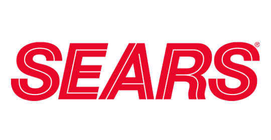

Perfil Profesional
Técnico Superior Universitario en Administración de Empresas con 10+ años en logística y operaciones, en transición estratégica hacia Análisis de Datos y
He optimizado procesos con herramientas digitales como Excel o Google sheets. En Banco Santander, ejecuté consultas en SQL. Como auxiliar administrativo, reduje faltantes de inventario con Kanban y 5S, y generé reportes de control. He liderado inventarios, optimizado rutas, controlado costos y generado reportes estratégicos en retail y banca.
En 2025 completé una formación intensiva en Power BI, Google Cloud y analitica de bases de datos AWS. Mi fortaleza: entender el negocio y traducirlo en dashboards, automatizaciones y decisiones basadas en datos.
Busco mi primera oportunidad como Junior Data Analyst en empresas con operaciones logísticas, retail o financieras.
Destacado por habilidades en el manejo avanzado de Excel, bases de datos y herramientas tecnológicas. Enfocado en la resolución de problemas, atención al detalle, liderazgo y optimización de procesos anteponiendo la mejora y eficiencia operativa. Autodidacta multidsciplinario con conocimientos en desarrollo web y programación básica.
Estoy en constante búsqueda de conocimiento y oportunidades para crecer profesionalmente y enfrentar próximos desafíos.
Actualmente
Emprendimiento Digital: "DeliPay deLimón"
Lidero un emprendimiento de producción y venta de pays, donde he aplicado mis habilidades analíticas y de desarrollo para crear soluciones a medida:
- Desarrollo de una app de gestión en Google App Script para la administración integral del negocio.
- Módulo de Inventario: Control de stock en tiempo real.
- Calculadora de Insumos: Optimización de la materia prima por producción.
- Calculadora de Producción: Análisis de rendimiento y rentabilidad.
- Pedidos: Automatización de envío de mensajes.
- Ventas y Seguimiento de Pedidos: Registra ventas y sigue el desempeño diario.
Formación Continua
Comprometido con el aprendizaje constante para fortalecer mi perfil profesional y logístico:
- Cursando "Python para Ciencia de Datos" en Pontificia Univ Católica de Chile.
- Cursando "Google Cloud Data Analytics" en Coursera.
- Cursando "Microsoft Power BI Data Analyst (prep PL-300)" en Coursera.
- Cursando "Desarrolo Web Fullstack" en Udemy.
- Cursando "E-Commerce con Gestión Comercial" en IE University.
- Explorando activamente nuevas tecnologías (Web 3.0, blockchain, smart contracts, crypto, PyMes) y metodologías de análisis de datos (Bussines Intelligent).
Filosofía Personal
"Escucha, Observa y ten Paciencia."
Misión
Aportar valor a través de la optimización de procesos y el análisis de datos, convirtiendo información en decisiones estratégicas que impulsen crecimiento y eficiencia.
Visión
Ser un profesional que no solo resuelve problemas actuales, sino que anticipa desafíos futuros con cimientos analíticos.
Valores
Honestidad. Responsabilidad. Respeto. Pilares de todas mis interacciones profesionales y personales.
Habilidades Destacadas
Administrativas
- Comunicación Organizacional
- Liderazgo y Trabajo Colaborativo
- Atención al Detalle y Organización
- Resolución de Problemas
- Facturación y proveedores
- Conciliación bancaria y caja
- Atención al cliente
- Presupuestos y costos
Logísticas
- Gestión de Almacenes
- Control Vehícular
- Optimización de Procesos
- Gestión de inventarios (Kanban, 5S, PEPS)
- Coordinación de pedidos y entregas
- Optimización de rutas y transporte
Análisis de Datos
- Excel Avanzado (Dashboards, VBA)
- Power BI (Dashboards, ETL)
- Bases de Datos (SQL)
- Generación de KPIs y Dashboards
- BigQuery
- Power Query
- AWS bases de datos
Tecnologías
- HTML & CSS
- SQL, Power BI
- Python Básico
- ERP (CONTPAQi, Fasyl, FrontRest y SAP)
Idiomas
- Inglés intermedio-avanzado (B2)
- Chino básico (desde inglés)
Proyectos Destacados
Propuesta de mejora: Seguimiento de productividad Santander
Como Analista dentro del área de Prevención de Fraudes conjugué mi formación y experiencia desarrollando una iniciativa administrativa que buscaba implementar un programa integral de monitoreo permitiendo identificar áreas de mejora en los analistas, optimizando la detección de fraude y asegurando el cumplimiento de objetivos. El modelo proponía un seguimiento gráfico diario, semanal y mensual, con retroalimentación constante entre supervisores y analistas, fomentando la comunicación, la integración y la mejora continua. A corto plazo garantizaría estabilidad operativa; a mediano, consolidaría la eficacia y eficiencia; y a largo, establecería un sistema sostenible de desempeño basado en indicadores objetivos y hábitos de mejora.
Dashboard Control de Vehículos TVCenlinea.com
Como Chofer-almacenista (2018) desarrollé un control de entregas, kilómetros recorridos y consumo de gasolina de diferentes vehículos a mi cargo. Tablas y gráficas en Excel fueron la base de este proyecto cuyo objetivo era tener un vistazo en tiempo real de las entregas realizadas por el chofer y un histórico a partir del llenado diario en un formulario interactivo que permitía recopilar y consolidar información y así llevar un mejor control preventivo y de rendimiento de los vehículos.
Validador y Control de Fondo de Caja TVCenlinea.com
Como Auxiliar Administrativo (2020) desarrollé una plantilla para reducir a cero la diferencia en el cobro de efectivo por medio de un validador en excel que a su vez generaba referencia de depósito bancario, control de morralla y control por transacción por medio de fórmulas y hojas de cálculo.
Kpi´s Boguet
Como Analista de Gategourmet y Supervisor en Boguet (2009-2014) desarrollé una plantilla de Kpi´s automatizada por la retralimentación diaria de cinco tiendas de comida rápida, donde en un solo archivo diario de excel se recopilaba información financiera y de inventario cruzando datos con ERP FrontRest para así llevar el control del inventario y seguimiento de presupuesto en tiempo real.
Publicación. La pluma y el Dragón
Proyecto personal. Cuento de realismo mágico redactado para una revista de fomento y recreación social a cargo de la Secretaría de Cultura del Gobierno del Distrito Federal publicado en 2005.
Experiencia Laboral
Especialista “A” en Prevención de Fraudes

Banco Santander
Querétaro | Octubre 2023 – Abril 2025 (1.5 años)
Empresa transnacional. Análisis de datos, monitoreo y análisis de alertas de fraude, aplicación de medidas de mitigación de riesgo. Automatización con VBA, actualización de bases de datos con SQL, Access y VBA. Propuesta de plan de mejora en comunicación interna para optimizar resultados y productividad.
Auxiliar Administrativo | Chofer Almacenista

TVC en Linea.com, Venta y distribución de equipos de seguridad electrónica
Querétaro | Abril 2015 – Marzo 2023 (8 años)
Empresa mexicana. Atención al cliente, autorización de pedidos, gestión de pedidos y entrega, conciliación bancaria en línea, análisis financiero. Control de inventarios, embarques y entregas (Kanban). Verificación de órdenes de compra, validación de existencias, conteo de inventarios y resolución de discrepancias. Manejo de montacargas y optimización de procesos logísticos, Gung-Ho! y 5S´s.
Asesor de Ventas
Sears, Tienda Departamental
CDMX | Diciembre 2014 – Febrero 2015
Empresa transnacional. Atención al cliente, venta y cobro de ropa infantil, cierre de caja, limpieza y acomodo de mercancía.
Analista y Supervisor
Gate Gourmet & Maasa. Catering aéreo. | Boguet. Cadena de cómida rápida.
Aeropuerto Internacional de la CDMX Terminal-2 | Noviembre 2009 – Agosto 2014 (5 años)
Empresa transnacional de preparación y distribución de alimentos. Rol dual. Logística, generación de reportes, generación de KPI´s y Dashboards. Facturación a proveedores(Starbucks, Tiendas Extra). Proyección de ventas. Manejo de bases de datos. Activiades en "Boguet": Supervisor y atención al público. Actualización de precios y control de costos. Encargado de tienda. Auditoría y control de inventarios, arqueos de caja. Manejo de ERP Front Desk POS, SQL y Excel.
Encargado de Sucursal
Photofolio. Tienda de regalos.
CDMX y Saltillo, Coahuila | Octubre 2008 – Julio 2009
Empresa mexicana. Atención a clientes, venta y acomodo de mercancía, depósitos bancarios, manejo de personal y control de inventarios.
Barista
Librería Porrúa Hermanos y Cía, Editorial. Cafetería.
CDMX | Julio 2006 – Octubre 2008
Empresa mexicana. Atención a clientes, venta y preparación de Frappes, Esppressos, Latte Art e infusiones; depósitos bancarios, control de inventarios.
Staff Multifuncional
Cinemex, Exhibición de películas.
Naucalpan, México | Noviembre 2001 – Agosto 2005
Empresa mexicana. Atención a clientes, manejo de efectivo y POS. Recepción, armado y proyección de películas. Logros: Reconocimiento en el área de Concesiones Mar-2002, Empleado del mes Abr-2002, Reconocimiento en el área de Tesorería Abr-2003, Reconocimiento en el área de Piso y Taquilla Dic-2003, Reconocimiento por participación en el 1er FICCO Mar-2004, Reconocimiento en el área de Proyección Ago-2004, Reconocimiento en el área de Proyección Feb-2005, Reconocimiento por participación y proyección de subtítulos en 2do FICCO Mar-2005.
Educación
Técnico Superior Universitario en Administración y Gestión de PYMES Titulado
Universidad Abierta y a Distancia de México, CDMX | 2015 – 2020
Licenciatura en Ciencias de la Comunicación Trunco
Universidad Mexicana, Cd. Satélite Naucalpan | 2003 – 2005
Bachillerato (Certificado)
Universidad Hispano Mexicana, San Mateo, Naucalpan | 1997 – 2001
Cursos y Certificaciones
Microsoft Power BI Data Analyst
Google Cloud | Octubre 2025
Preparing Data for Analysis with Microsoft Excel. Técnicas esenciales de Excel, empezando por la creación y el formateo de hojas de cálculo
Harnessing the Power of Data with Power BI. Reconocer y usar los componentes clave de análisis de datos de Microsoft Power BI. Comprender las habilidades, tareas y herramientas de un analista de datos de Power BI. Describir las diferentes etapas del proceso de análisis de datos que dan como resultado decisiones basadas en datos. Data Literacy. Data Visualization Software. Data Collection. Business Analytics. Data-Driven Decision-Making. Microsoft 365. Power BI. Data Analysis. Data Transformation. Data Cleansing
Data Analytics and Databases on AWS
Amazon Web Services | Octubre 2025
Tipos y estructuras de datos clave. Servicios de AWS para el proceso ETL. Data Processing. Extract, Transform, Load. Relational Databases. Databases Data Warehousing. Big Data NoSQL. Business Analytics. Data-Driven Decision-Making. Data Storage. Unstructured Data. Data AnalysisExperiencia práctica con Amazon API Gateway y Amazon QuickSight
Google Cloud Data Analitycs
Google Cloud | Octubre 2025
Introduction to Data Analytics in Google Cloud. Big Data. Cloud Infrastructure. Cloud Technologies. Data Structures. Data Management. Cloud Services. Data Governance. Data Collection. Digital Transformation. Cloud Computing. Google Cloud Platform. Data Analysis
Data Management and Storage in the Cloud. Star Schema. Data Warehousing. Data Management. Data Lakes. Application Programming Interface (API). Big Data. Metadata Management. Data Access. NoSQL. Cloud Storage. Data Architecture. Database Management
From Excel to Power BI
Knowledge Accelerators | Octubre 2025
Utilizar Excel y Power BI para recopilar, mantener, compartir y colaborar en datos, así como para tomar decisiones basadas en ellos. Data Import/Export. Data Synthesis. Data Presentation. Data Analysis. Excel Formulas. Microsoft 365. Data Analysis Expressions (DAX). Power BI. Data Sharing. Trend Analysis.Key Performance Indicators (KPIs). Business Analytics
Contabilidad para no contadores
UNAM | Octubre 2025
Estados financieros. Contabilidad. Contabilidad financiera. Libros contables. Flujos de efectivo. Tenencia de libros. Información financiera. Estado de resultados. Balance general. Principios de contabilidad generalmente aceptados (PCGA). Prácticas contables estándar.
Chinese for Beginners
Peking University | Octubre 2025
Vocabulary. Oral Comprehension. Language Learning. Communication. Grammar. Language Competency.
Python
Santader Open Academy | Octubre 2025
Lógica de Programación. Codificación en Python: Escribir y ejecutar código básico con sintaxis correcta. Gestión de Errores: Identificar y corregir fallos comunes en programas. Reutilización de Código: Crear y usar funciones/módulos para eficiencia. Pensamiento Computacional: Aplicar conceptos a escenarios reales, base para carreras en tech.
Logística y Cadena de Suministros
Udemy | Octubre 2025
Gestión de Inventarios. Calcular y optimizar stocks con Excel (ABC, rotación, cobertura). Análisis Logístico. Diseño de Cadena de Suministro. Fronteras PUSH-PULL, finanzas/ventas.
Google: Inteligencia Artificial y Productivdad
Google | Septiembre 2025
Conocimientos Básicos de IA y su rol en la productividad. Aplicar Gemini para tareas reales, como automatización y resolución de problemas. Creación de Prompts. Automatizar procesos y generar ideas innovadoras en contextos laborales. Adaptabilidad Digital.
Bussines English
Santander Open Academy | Septiembre 2025
Comunicación Empresarial: Expresiones y frases para conversaciones profesionales diarias. Listening Avanzado: Comprender acentos y contextos laborales variados. Vocabulario Temático: Dominio de términos en negocios, tech y finanzas. Gramática Contextual: Uso correcto en emails, reportes y presentaciones. Confianza Profesional: Mejora en etiqueta y networking global, clave para empleabilidad.
Introducción a la Ciencia de Datos
IE University | Septiembre 2025
Comprensión de Fundamentos de Ciencia de Datos y su rol en la resolución de problemas complejos, integrando matemáticas, estadística y programación. Aplicación Estratégica en Negocios. Big Data, uso de datos a gran escala, y técnicas para analizar y extraer valor de volúmenes masivos de información. Gestión de Calidad de Datos.
Fundamentos de Power BI
Santander Open Academy | Septiembre 2025
Análisis de Datos Básico: Importar, explorar y transformar datos con Power BI y Power Query. Diseñar reportes y gráficos interactivos para comunicar insights claros. Limpiar y filtrar información para mejorar rendimiento y precisión en presentaciones. Herramientas de Power BI para generar ventajas competitivas en negocios. Familiaridad con funciones de Power BI aplicables a entornos profesionales o PYMEs.
Liderazgo
Santander Open Academy | Septiembre 2025
Estilos de Liderazgo, Liderazgo Situacional. Comunicación efectiva, gestión del tiempo, resolución de conflictos y motivación. Estrategias para entornos digitales, construcción de cultura organizacional y evaluación de impacto.
Excel Aplicado a los Negocios (Nivel Avanzado)
Universidad Austral, Argentina | Marzo 2023
Excel Formulas. Data Validation. Spreadsheet Software. Business Modeling. Data Integration. Microsoft Excel. Data Import/Export. Business Analysis. Excel Macros. Process Optimization. Business Analytics
Administración de la Capacitación y Desarrollo de los Recursos Humanos
Dirección General de Concentración y Capacitación Laboral (STPS) | Julio 2023
Fundamentos de capacitación laboral (art. 123 Constitucional y LFT); tipos de capacitación (interna/externa); diagnóstico de necesidades; mapa conceptual de elementos (objetivos, contenidos, puestos).
Administrador de Bases de Datos Relacionales
Edutin Academy, Newark, EE.UU. | Julio 2023
Fundamentos de SQL: Conceptos básicos y relaciones entre tablas. Diseño de Bases de Datos: Esquemas, tipos de datos, normalización y modificación de estructuras. Consultas Avanzadas: JOINs, subconsultas, agregaciones y optimización.
Curso de Python, HTML Y CSS
CodeLiber | Agosto 2023
Responsive Web Design
freeCodeCamp | 31 Agosto 2023
HTML (Hypertext Markup Language) for content, and CSS (Cascading Style Sheets) for design. Basics of HTML and CSS. Modern techniques and best practices for accessibility by building webpages
Formaciones Adicionales e Intereses
Formación Adicional
- Curso Primeros Auxilios, Prevención de Incendios y Evacuación de Inmuebles - DISA | Feb 2017
- Publicación “La pluma y el dragón” - Editorial del Gob del DF | Jul 2005
- Co-Director de "ga-Z" interescolar | Nov 2004
- Curso de evacuación e incendios - Protección Civil | Abr 2003
- Curso Primeros Auxilios - Cruz Roja Juventud | 1997
Intereses
- Lectura (500 ppm) y Cine
- Guitarrista y músico (producción, edición, composición)
- Organización y Metodología
- Disfrutar a mi familia